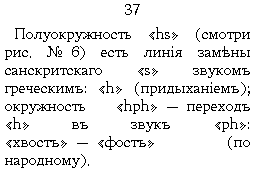
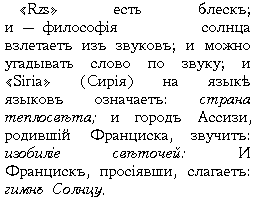

Glossolalia (Section 37)
GLOSSOLALIA

The semicircle "hs" (look at illustration No 5) is the line of the replacement of the Sanskrit "s" by the Greek: "h" (aspiration); the perimeter "hph" is -- the transfer of "h" into the sound "ph": "tail" in Russian is "khvost" -- "phost" among the folk.

"Rzs" is a gleam; and -- the philosophy of the sun flies up out of the sounds; and you can guess the meaning of a word by its sound; and "Siria" (Syria) in the lingua linguarum signifies: the country of warm-light; and the city of Assisi, which gave birth to Franciscus, sounds like: an abundance of lights: And Franciscus, having shone, composes: a Canticle to the Sun.